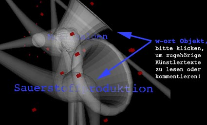
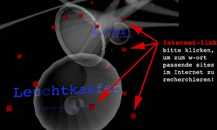

|
nachgefragt::
|
|
Was haben Sie zu
sagen |
|
im
Internet oder direkt im Büro hell-gruen, Kulturamt, Ehrenhof 3
in Düsseldorf, können Sie Ihren Kommentar zu den künstlerischen
Einzelpositionen der Ausstellung hell-gruen veröffentlichen - oder
die Texte von früheren Besuchern lesen. |
|  |
| Gleichzeitig können Sie unter kleinen Würfelobjekten, die die Stichwörter umgeben, Internetlinks zu verwandten Themen im web recherchieren. |
|  |
|
Systemanforderungen: |
|
ein
Projekt von |